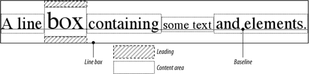
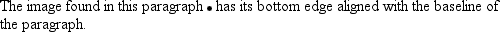
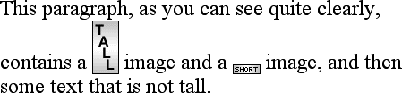
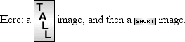
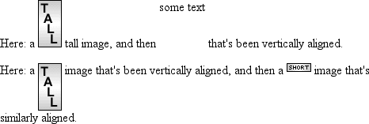
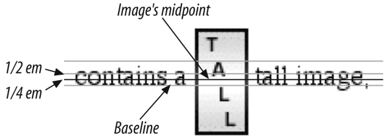
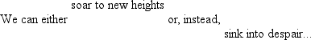
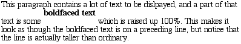
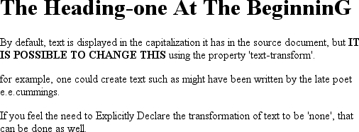

CSS权威指南（3rd）笔记-查缺补漏1
元素
元素（element）是文档结构的基础。在HTML中，最常用的元素很容易识别，如p、table、span、a和div。文档中的每个元素都对文档的表现起一定作用。在CSS中，至少在CSS2.1 中，这意味着每个元素生成一个框（box，也称为盒），其中包含元素的内容。
替换和非替换元素
尽管CSS依赖于元素，但并非所有元素都以同样的方式创建。例如，图像和段落就不是同类元素，span和div也不相同，在CSS中，元素通常有两种形式：替换和非替换。
替换元素
替换元素（replaced element）是指用来替换元素内容的部分并非由文档内容直接表示。在XHTML中，我们最熟悉的替换元素例子就是img元素，它由文档本身之外的一个图像文件来替换。实际上，img没有具体的内容，通过以下的简单例子可以了解这一点：<img src="howdy.gif"/>
这个标记片段不包含任何具体内容，只有一个元素名和一个属性。除非将其指向一个外部内容（在这里，就是由src属性指定的一个图像），否则这个元素没有任何意义。input元素与之类似，取决于input元素的类型，要由一个单选钮、复选框或文本输入框替换。替换元素显示时也生成框。
非替换元素
大多数HTML和XHTML元素都是非替换元素（nonreplaced element）。这意味着，其内容由用户代理（通常是一个浏览器）在元素本身生成的框中显示。例如，<span>hi there</span>就是一个非替换元素，文本“hi there”将由用户代理显示，段落、标题、表单元格、列表和XHTML中的几乎所有元素都是非替换元素。
元素显示角色
除了替换和非替换元素，CSS2.1还使用另外两种基本元素类型：块级（block-level）元素和行内（inline-level）元素。
块级元素
块级元素生成一个元素框，（默认地）它会填充其父元素的内容区，旁边不能有其他元素。换句话说，它在元素框之前和之后生成了“分隔符”。我们最熟悉的HTML块元素是p和div。替换元素可以是块级元素，不过通常都不是。
列表项是块级元素的一个特例。除了表现方式与其他块元素一致，列表项还会生成一个标记符——无序列表中这通常是一个圆点，有序列表中则是一个数字——这个标记符会“关联”到元素框。除了这个标记符外，列表项在所有其他方面都与其他块元素相同。
行内元素
行内元素在一个文本行内生成元素框，而不会打断这行文本（译注1）[1]。行内元素最好的例子就是XHTML中的a元素。strong和em也属于行内元素。这些元素不会在它本身之前或之后生成“分隔符”，所以可以出现在另一个元素的内容中，而不会破坏其显示。
注意，尽管“块”和“行内”这两个词与XHTML中的块级和行内元素有很多共同点，但也存在一个重要的差别。在HTML和XHTML中，块级元素不能继承自行内元素（即不能嵌套在行内元素中）。但是在CSS中，对于显示角色如何嵌套不存在任何限制。
要了解这是如何工作的，下面来考虑一个CSS属性：display。
display
- 值: none | inline | block | inline-block | list-item | run-in | table | inline-table | table-row-group | table-header- group | table-footer-group | table-row | table-column- group | table-column | table-cell | table-caption | inherit
- 初始值：inline
- 应用于：所有元素
- 继承性：无
- 计算值: 对于浮动元素、定位元素和根元素可变（参见CSS2.1第9.7节）。否则为指定值
link标记
<link rel="stylesheet" type="text/css" href="sheetl.css" media="all"/>
外部样式表不能包含任何文档标记，只能有CSS规则和CSS注释，本章后面将解释CSS规则和CSS注释。如果一个外部样式表中出现了标记，会导致其中一部分或全部被忽略。
rel代表“关系”（relation），在这里，关系为stylesheet。type总是设置为text/css。这个值描述了使用link 标记加载的数据的类型。这样一来，Web浏览器就知道了样式表是CSS样式表，这将确定浏览器如何处理其导入的数据。毕竟，将来可能会使用其他的样式语言，所以声明使用何种语言很重要。
最后还有一个media属性。这里使用的值是all，说明这个样式表要应用于所有表现媒体。CSS2为这个属性定义了很多可取值。其中3个得到最广泛支持的类型是all、screen和print。
候选样式表（PS:基本不会用到）
还可以定义候选样式表（alternate style sheet）。将rel属性的值置为alternate stylesheet，就可以定义候选样式表，只有在用户选择这个样式表时才会用于文档表现。
如果浏览器能使用候选样式表，它会使用link元素的title属性值生成一个候选样式列表。可以设置以下元素：1
2<link rel="stylesheet" type="text/css" href="sheet1.css" title="Default" />
<link rel="alternate stylesheet" type="text/css" href="bigtext.css" title="Big Text"/>
然后用户就能选择他们想用的样式，浏览器会从第一个样式（在这里，也就是标记为“Default”的样式）切换为用户选择的任何样式。
注意：候选样式表在大多数基于Gecko的浏览器中都得到了支持，如Mozilla, Netscape 6+以及Opera 7。通过使用JavaScript, Internet Explorer也能支持候选样式表，不过Internet Explorer本身对此并不提供支持。
类选择器还是ID选择器？
实际中，浏览器通常并不检查HTML中ID的唯一性，这意味着如果你在HTML文档中设罝了多个有相同ID属性值的元素，就可能为这些元素应用相同的样式。这种行为是不正确的，不过这种情况常会发生。如果一个文档中有多个相同的ID值，还会导致编写DOM脚本更为困难，因为像getElementByid( )之类的函数的前提是仅一个元素有给定的ID值。
类选择器和ID选择器可能是区分大小写的，这取决于文档语言。HTML和 XHTML将类和ID值定义为区分大小写，所以类和ID值的大小写必须与文档中的相应值匹配。
伪类的顺序很重要，这一点最初可能不太明显。通常的建议是“link-visited-hover-active”，不过现在已经改为“link-visited-focus-hover-active”。
:first-letter 和:first-line 的限制
在CSS2中，：firsti-letter和：first-line伪元素只能应用于标记或段落之类的块级元素，而不能应用于超链接等的行内元素。在CSS2.1中，:first-letter能应用到所有元素。不过能应用：first-line和：first-letter的CSS属性还是有一些限制。
一个选择器的具体特殊性如下确定：
- 对于选择器中给定的各个ID属性值，加0，1，0，0。
- 对于选择器中给定的各个类属性值，属性选择或伪类，加0，0，1，0。
- 对于选择器中给定的各个元素和伪元素，加0，0，0，1。伪元素是否有特殊性，在这方面css2有些自相矛盾，不过css2.1很清楚的指出，伪元素有特殊性，而且其特殊性为0，0，0，1。
- 结合符和通配符选择器对特殊性没有任何贡献
ex单位
ex是指所用字体中小写x的高度。因此，如果有两个段落，其中文本的大小为24点，但是各段使用了不同的字体，那么各段相应的ex值可能不同。这是因为，不同字体中x的高度可能不同
加粗如何起作用
为了理解用户代理如何确定一个给定字体变形的加粗度，我们暂不考虑加粗如何继承，首先介绍关键字100-900，这样最容易理解。定义这些数字关键字是为了映射字体设计中的一个很常见的特性，即为字体指定了9级加粗度。例如OpenType采用了一个数值梯度，其中包含9个值。如果一个字体内置了这些加粗级别，那么这些数字就直接映射到预定义的级别，100对应最细的字体变形，900对应最粗的字体变形。
实际上，这些数字本身并没有固有的加粗度。CSS规范只是指出，每个数对应一个加粗度，它至少与前一个数指定的加粗度相同。因此，100、200、300和400可能都映射到同样的较细变形，500和600可能对应到同样的较粗字体变形，而700、800和900 可能都生成同样的很粗的字体变形。只要一个关键字对应的变形不会比前一个关键字所对应变形更细，就都是允许的。
一般地，这些数都被定义为与某个常用变形名等价（先不考虑font-weight的其他值）。 400定义为等价于normal, 700对应于bold。其他数不对应font-weight的任何其他值，不过它们可能对应于常用变形名。如果有一个字体变形标为Normal、Regular、Roman 或Book，就会为之指定400，而标为Medium的变形会指定为500。不过，如果一个标为Medium的变形是唯一可用的变形，它不会指定为500而会是400。
如果给定的字体系列中定义的加粗度少于9种，用户代理还必须多做一些工作。在这种情况下，它必须以一种预定的方式填补这些“空白”：
- 如果未指定值500的加粗度，其字体加粗与400的相应加粗相同。
- 如果未指定300的加粗度，则为之指定下一个比400更细的变形。如果没有可用的较细变形，为300指定的变形等同于400的相应变形。在这种情况下，通常是Normal或Medium。这种方法同样适用于200和100。
- 如果未指定600的加粗度，会为之指定下一个比400更粗的变形。如果没有可用的较粗变形，为600指定的变形则等同于500的相应变形。这种方法同样适用于700、800 和 900.
缩进文本
使用text-indent属性，所有元素的第一行都可以缩进一个给定长度，甚至该长度可以是负值。当然，这个属性最常见的用途是将段落的首行缩进。
一般地，可以为所有块级元素应用text-indent,但无法将这个属性应用到行内元素，图像之类的替换元素上也无法应用text-indent属性。不过，如果一个块级元素（如段落）的首行中有一个图像，它会随着该行的其余文本移动。
text-indent还可以设置为负值，利用这种技术，可以实现很多有意思的效果。最常见的用途是一种“悬挂缩进”，即第一行悬挂在元素中余下部分的左边。
text-indent可以使用所有长度单位（包括百分数值）。百分数要相对于缩进元素父元素的宽度。换句话说，如果将缩进值设置为10%,所影响元素的第一行会缩进其父元素宽度的10%。
水平对齐
初始值：用户代理特定的值，还可能取决于书写方向，应用于：块级元素
最后一个水平对齐属性是：justify，它会带来自己的一些问题。在两端对齐文本中，文本行的左右两端都放在父元素的内边界上。然后，调整单词和字母间的间隔，使各行的长度恰好相等。两端对齐文本在打印领域很常见，不过在CSS中，还需要多做些考虑。
要由用户代理（而不是CSS）来确定两端对齐文本如何拉伸，以填满父元素左右边界之间的空间。例如，有些浏览器可能只在单词之间增加额外的空间，而另外一些浏览器可能会平均分布字母间的额外空间（不过CSS规范特别指出，如果letter-spacing属性指定为一个长度值，“用户代理不能进一步增加或减少字符间的空间”）。还有一些用户代理可能会减少某些行的空间，使文本挤得更紧密。所有这些做法都会影响元素的外观，甚至改变其高度，这取决于用户代理的对齐选择影响了多少文本行。
CSS也没有指定应当如何处理连字符（CSS中没有说明如何处理连字符，因为不同的语言有不同的连字符规则。规范没有尝试去调合这样一些很可能不完备的规则，而是干脆不提这个问题。）。大多数两端对齐文本都使用连字符将长单词分开放在两行上，从而缩小单词之间的间隔，改善文本行的外观。不过，由于CSS没有定义连字符行为，用户代理不太可能自动加连字符。因此，在CSS中，两端对齐文本看上去没有打印出来好看，特别是元素可能太窄，以至于每行只能放下几个单词。当然，使用窄设计元素是可以的，不过要当心相应的缺点。
垂直对齐
行高
line-height属性是指文本行基线之间的距离，而不是字体的大小，它确定了将各个元素框的高度增加或减少多少，在最基本的情况下，指定line-height可以用来增加（或减少）文本行之间的垂直间隔，人们认为这是一种了解line-height:如何工作的简单方法，但其实并不简单。line-height控制了行间距，这是文本行之间超出字体大小的额外空间。换句话说，line-height值和字体大小之差就是行间距。
- 值：
<length> | <percentage> | <number> | normal | inherit - 初始值：normal
- 应用于：所有元素（不过请参考关于替换元素和块级元素的介绍）
- 继承性：有
- 百分数：相对于元素的字体大小
在应用到块级元素时，line-height定义了元素中文本基线之间的最小距离。注意，它定义的是最小距离，而不是一个绝对数值，文本基线拉开的距离可能比line-height值更大，line-height并不影响替换元素的布局，不过确实可以应用到替换元素（详情参考后文）。
构造文本行
文本行中的每个元素都会生成一个内容区，这由字体的大小确定。这个内容区则会生成一个行内框（inline box），如果不存在其他因素，这个行内框就完全等于该元素的内容区，由line-height产生的行间距就是增加或减少各行内框高度的因素之一。
要确定一个给定元素的行间距，只需将line-height的计算值减去font-size的计算值。这个值是总的行间距。而且要记住，这可能是一个负值。然后行间距再除2，将行间距的一半分别应用到内容区的顶部和底部。其结果就是该元素的行内框。
举个例子，假设font-size为14像素高（相应地，内容区的高度也是14像素），而且line-height计算为18像素。其差（4像素）除以2，将其一半分别应用到内容区的顶部和底部。这会得到一个18像素高的行内框，在内容区的上面和下面分别有2个额外的像素。听上去用这种方法描述line-height如何工作好像很绕，不过这样描述有充分的理由。
一旦给定内容行已经生成了所有行内框，接下来在行框（指的是包裹整行的框）的构造中就会考虑这些行内框。行框的高度恰好足以包含最高行内框的顶端和最低行内框的底端。下图展示了这个过程。

指定line-height值
下面来考虑line-height的可取值。如果使用默认值normal，用户代理必须计算行间的垂直空间。不同的用户代理计算出的值可能不同，不过通常都是字体大小的1.2倍，这使得行框要高于给定元素的font-size值。
大多数值都是简单的长度度量（例如，18px或2em）。注意，即使使用一个合法的长度度量，如4cm，但浏览器（或操作系统）在实际度量中使用的标准可能并不正确，所以在你的显示器上行高可能不是4厘米。
em, ex和百分数值都相对于元素的font-size值计算。以下标记很直接明了：1
2
3
4
5
6
7
8
9
10body {line-height: 14px; font-size: 13px;}
p.c11 {line-height: 1.5em;}
p.c12 {font-size: 10px; line-height: 150%;}
p.c13 {line-height: 0.33in;}
<p>This paragraph inherits a 'line-height' of 14px from the body, as well as a 'font-size' of 13px.</p>
<p class="c11">This paragraph has a 'line-height' of 19.5px(13 * 1.5), so it will have slightly more line-height than usual.</p>
<p class="c12">This paragraph has a 'line-height' of 15px (10 * 150%), so
it will have slightly more line-height than usual.</p>
<p class="c13">This paragraph has a 'line-height' of 0.33in, so it will have slightly more line-height than usual.</p>
行高和继承
当一个块级元素从另一个元素继承line-height时，问题会变得更为复杂。line-height值从父元素继承时，要从父元素计算，而不是在子元素上计算。但创作人员原来可能并不想这样：1
2
3
4
5
6
7body {font-size: 10px;}
div {line-height: 1em;}/* computes to -10px */
p {font-size: 18px;}
<div>
<p>This paragraph-s 'font-size' is 18px, but the inherited 'line-height' value is only l0px. This may cause the lines of text to overlap each other lay a small amount .</p>
</div>
See the Pen 行高和继承 by XmoyKing (@xmoyking) on CodePen.
为什么这些行挨得这么近？因为段落从其父元素div继承了line-height的计算值10px。如图6-10所示，对于这种line-height太小的问题，一种解决办法是为每个元素设置一个显式的line-height，但是这种方法不太实用。更好的办法是指定一个数，由它设置缩放因子。
指定一个数时，缩放因子将是继承值而不是计算值。这个数会应用到该元素及其所有子元素，所以各元素都根据其自己的font-size计算line-height1
2
3
4
5
6div {line-height: 1.5;}
p {font-size: 18px;}
<div>
<p>This paragraph's 'font-size' is 18px, and since the 'line-height' set for the parent div is 1.5, the 'line-height' for this paragraph is 27px (18 * 1.5).</p>
</div>
尽管看上去line-height在每个文本行的上面和下面平均分配了额外空间，实际上，它是在行内元素的内容区顶部和底部增加（或减少）一定的量来创建一个行内框。假设一个段落的默认font-size是12pt，考虑以下规则：
p (line-height: 16pt;)
由于12点文本的“固有”行高是12点，前面的规则将在段落中各行文本外围增加额外的4点空间。这个额外的量平均分为两部分，一半放在各行的上面，另一半放在各行的下面。现在基线间则有16点空间，这是分配额外空间的间接结果。如果指定值inherit，元素则会使用其父元素的计算值。这与值自然继承没有什么不同。
垂直对齐文本
如果你曾用过元素sup和sub（上标和下标元素），或者曾用过有<img src="foo.gif" align="middle">之类标记的图像，说明你已经做过一些基本的垂直对齐，在CSS中，vertical-align属性只应用于行内元素和替换元素，如图像和表单输入元素。vertical-align属性不能继承。
vertical-align只接受8个关键字、一个百分数值或一个长度值。这些关键字有些我们很熟悉，有些可能不熟悉，包括：baseline（默认值）、sub、super、bottom、text- bottom、middle、top和text-top。
- 值：
baseline | sub | super | top | text-top | middle | bottom | text-bottom | <percentage> | <length> | inherit - 初始值：baseline
- 应用于：行内元素和表单元格(应用到表单元格时，只能识别baseline、top、middle和bottom等值)
- 继承性：无
- 百分数：相对于元素的line-height值
- 计算值：对于百分数和长度值，为绝对长度；否则，根据指定确定
要记住：vertical-align不影响块级元素中内容的对齐。
基线对齐
vertical-align: baseline要求一个元素的基线与其父元素的基线对齐。大多数情况下，浏览器都会这么做，因为你显然希望一行中所有文本元素的底端都对齐。
如果一个垂直对齐元素没有基线——也就是说，如果这是一个图像或表单输入元素，或者是其他替换元素——那么该元素的底端与其父元素的基线对齐，如下图所示1
2
3img {vertical-align: baseline;}
<p>The image found in this paragraph <img src="dot.gif" alt="A dot"/> has its bottom edge aligned with the baseline of the text in the paragraph.</p>

这个对齐规则很重要，因为它使得一些Web浏览器总把替换元素的底边放在基线上，即使当行中没有其他文本。例如，假设一个表单元格中只有一个图像。这个图像可能实际在基线上，不过在某些浏览器中，基线下面的空间会导致图像下出现一段空白。另外一些浏览器则会把图像“紧包”在表单元格中，所以不会出现空白。根据CSS工作组的意见，这种加空白的行为是正确的，不过大多数创作人员都不喜欢这种做法。
上标和下标
vertical-align: sub声明会使一个元素变成下标，这意味着其基线（或者如果这是一个替换元素，则是其底端）相对于其父元素的基线降低。规范并没有定义元素降低的距离，所以对于不同的用户代理，这个距离可能有所不同。
super刚好与sub相反，它将元素的基线（或替换元素的底端）相对于父元素的基线升高。同样地，文本升高的距离取决于具体的用户代理。
注意，值sub和super不会改变元素的字体大小，所以下标或上标文本不会变小（或变大）。相反，下标或上标元素中的所有文本默认地都应当与父元素中的文本大小相同。
底端对齐
vertical-align: bottom将元素行内框的底端与行框的底端对齐。例如，以下标记的结果如下图所示：1
2
3.feeder {vertical-align: bottom;}
<p>This paragraph, as you can see quite clearly, contains a <img src="tall.gif" alt="tall" class="feeder" /> image and a <img src="short.gif" alt="short" class="feeder"/> image, and then some text that is not tall.</p>

段落的第二行包含两个行内元素，其底边彼此对齐。它们都在文本基线之下。
vertical-align: text-bottom是指行内文本的底端。替换元素或任何其他类型的非文本元素会忽略这个值。对于这些元素，将考虑一个“默认”的文本框。这个默认框由父元素的font-size得到。要对齐的元素的行内框底端再与这个默认文本框的底端对齐。因此，给定以下标记，可以得到如图所示的结果：1
2
3img.tbot {vertical-align: text-bottom;}
<p>Here: a <img src="tall.gif" style="vertical-align: middle;" alt="tall"/> image, and then a <lmg src="short.gif" class="tbot" alt="short"/> image.</p>

vertical-align:top的效果与bottom刚好相反，类似地，vertical-align:text-top则与text-bottom的作用相反。
1 | .up {vertical-align: top;} |

当然，对齐的具体位置取决于行内有哪些元素，它们有多高，以及父元素字体的大小。
居中对齐
还有一个值middle，它往往（但并不总是）应用于图像。你可能会从它的名字想象其效果，但你的想象与其实际效果并不完全一样。middle会把行内元素框的中点与父元素基线上方0.5ex处的一个点对齐，这里的1ex相对于父元素的font-size定义。下图更详细地说明了这一点。

因为大多数用户代理都把1ex处理为0.5em, middle往往将元素的垂直中点与父元素基线上方0.25em处的一个点对齐。不过，不要指望总会这样，因为有些用户代理确实会为各元素计算准确的x-height（有3种相对长度单位：em、ex和px。前两个单位代表“em-height”和“x-height”）。
百分数
使用百分数不能模仿图像的align=”middle”对齐。相反，如果为vertical-align设置一个百分数，会把元素的基线（或替换元素的底边）相对于父元素的基线升高或降低指定的量（你指定的百分数要计算为该元素line-height的百分数，而不是相对于其父元素的line-height）。正百分数值会使元素升高，负值则会使其降低。取决于文本的升高或降低，可能看上去它放在了相邻的行上，如下图所示，所以使用百分数值时要当心：1
2
3sub {vertical-align:-100%;}
sup {vertical-align: 100%;}
<p>Me can either <sup>soar to new heights</sup> or, instead,<sub>sink into despair...</sub></p>

下面更详细地考虑百分数值。假设有以下标记：1
2
3
4<div style="font-size: 14px; line-height: 18px;">
I felt that, if nothing else, I deserved a
<span styles="vertical-align: 50%;">raise</span> for my efforts.
</div>
设置为50%的span元素对齐时，会使其基线升高9像素，这是元素继承的line-height 值（18px）的一半，而不是7像素。
长度对齐
最后，来考虑根据指定长度垂直对齐。vertical-align很明确：它把一个元素升高或降低指定的距离。因此，vertical-align: 5px;会把一个元素与对齐前相比上升5像素。负长度值会使元素下降。这种简单的对齐形式在CSS1中不存在，但在CSS2中已经增加。
要认识到垂直对齐的文本并不会成为另一行的一部分，它也不会覆盖其他行中的文本，这很重要。考虑下图，其中在段落中间出现一些垂直对齐文本。

可以看到，所有垂直对齐的元素都会影响行高。应该记得行框的描述，其高度要足以包含最高行内框的顶端和最低行内框的底端。这包括因垂直对齐上升或下降的行内框。
字间隔和字母间隔
前面已经介绍了对齐，下面来看如何处理字间隔和字母间隔。同样地，这些属性存在一些不太直观的问题。
字间隔
word-spacing属性接受一个正长度值或负长度值。这个长度会增加到字之间的标准间隔。实际上，word-spacing用于修改字间间隔。因此，默认值normal与设置值为0是一样的。
如果提供一个正长度值，那么字之间的间隔就会增加。为word-spacing设置一个负值时，会把字拉近。用最简单的CSS术语来讲，“字”可以是任何非空白符字符组成的串，并由某种空白符包围。这个定义没有实际语义，它只是假设一个文档包含由一个或多个空白符包围的字。支持CSS的用户代理不一定能确定一个给定语言中哪些是合法的字，而哪些不是。尽管这个定义没有多大价值，不过它意味着采用象形文字的语言或非罗马书写体往往无法指定字间隔。利用这个属性，可能会创建很不可读的文档。
字母间隔
word-spacing遇到的许多问题也同样出现在letter-spacing中。这二者之间唯一的真正区别是字母间隔修改的是字符或字母之间的间隔。
像word-spacing属性一样，letter-spacing属性的可取值包括所有长度。默认关键字是normal （这与letter-spacing: 0相同）。输入的长度值会使字母间的间隔增加或减少指定的量。
间隔和对齐
word-spacing的值可能受text-align属性值的影响。如果一个元素是两端对齐的，字母和字之间的空间可能会调整，以便文本在整行中刚好放下。这可能又会改变创作人员用word-spacing声明的字间隔。如果为letter-spacing指定一个长度值，字符间隔则不会受text-align影响，但是如果letter-spacing的值是normal，字符间的间隔就可能改变，以便将文本两端对齐。CSS没有指定应当如何计算间隔，所以用户代理只是将其填满。
一般地，一个元素的子元素会继承该元素的计算值，无法为word-spacing或letter- spacing 定义一个可继承的缩放因子来取代计算值（像line-height那样）。如果字母间隔与文本大小成比例，得到字母间隔的唯一办法就是显式地设置。
文本转换
下面来看如何使用text-transform属性处理文本的大小写。
- 值：uppercase | lowercase | capitalize | none | inherit
- 初始值：none
- 应用于：所有元素
- 继承性：有
- 计算值：根据指定确定
默认值none对文本不做任何改动，将使用源文档中原有的大小写，头名思义，uppercase 和 lowercase 将文本转换为全大写或全小写字符。最后，capitalize只对每个单词的首字母大写。
不同用户代理可能会用不同的方法来确定单词从哪里开始，相应地确定哪些字母要大写。例如，如下图所示，h1元素中的文本“heading-one”可以用两种方式显示：”Heading-one”或“Heading-One”。CSS并没有说哪一种是正确的，所以这两种都是可以的。

你可能还注意到，h1元素的最后一个字母还是大写。这没有错：在应用text- transfom值capitalize时，CSS只要求用户代理确保每个单词的首字母大写，可以忽略单词的余下部分。
作为一个属性，text-transform看上去可能无关紧要，不过如果你突然决定将所有h1 元素都变成大写，这个属性就很有用。不必单独地修改所有h1元素的内容，只需使用text-transform为你完成这个修改。
处理空白符
我们已经介绍了很多对文本应用样式的方法，下面来讨论属性white-space，它会影响用户代理对源文档中的空格、换行和tab字符的处理。
- 值：normal | nowrap | pre | pre-wrap | pre-line | inherit
- 初始值：normal
- 应用于：所有元素（CSS2.1），块级元素（CSS1和CSS2）
使用这个属性，可以影响浏览器处理字之间和文本行之间的空白符的方式。从某种程度上讲，默认的XHTML处理已经完成了空白符处理：它会把所有空白符合并为一个空格。所以给定以下标记，它在Web浏览器中显示时，各个字之间只会显示一个空格，而且忽略元素中的换行。
不过，如果将white-space设置为pre，受这个属性影响的元素中，空白符的处理就有所不同，就好像元素是XHTML pre元素一样；空白符不会被忽略。不过，如果white-space值为pre，浏览器将会注意额外的空格，甚至回车。在这个方面，而且仅在这个方面，任何元素都可以相当于一个pre元素。
与之相对的值是nowrap，它会防止元素中的文本换行，除非使用了一个br元素。在CSS 中使用nowrap非常类似于HTML 4中用<td nowrap>将一个表单元格设置为不能换行，不过white-space值可以应用到任何元素。
CSS2.1引入了值pre-wrap和pre-line，这在以前版本的CSS中是没有的。这些值的作用是允许创作人员更好地控制空白符处理。
如果一个元素的white-space被设置为pre-wrap，那么该元素中的文本会保留空白符序列，但是文本行会正常地换行。如果设置为这个值，源文本中的行分隔符以及生成的行分隔符也会保留。pre-line与pre-wrap相反，会像正常文本中一样合并空白符序列，但保留换行符。
文本方向
CSS2引入了一个属性来描述其方向性。
- 值：ltr | rtl | inherit
- 初始值：ltr
direction属性影响块级元素中文本的书写方向、表中列布局的方向、内容水平填充其元素框的方向，以及两端对齐元素中最后一行的位置。对于行内元素，只有当unicode-bidi属性设置为embed或bidi-override时才会应用direction属性（见以下关于unicode-bidi 的描述）。
注意：在CSS3之前，CSS规范中没有涵盖从上到下读的语言。CSS3 Text Module 解决了这个问题。引入了一个新属性writing-mode。
尽管ltr是默认值，但可以想见，如果浏览器在显示从右向左读的文本，默认值会改为rtl。因此，浏览器可能会有以下内部规则：*:lang(ar),*:lang(he){direction:rtl;}
实际的规则可能更长一些，将涵盖所有从右向左读的语言，而不只是阿拉伯语和希伯来语，不过这也能说明问题。尽管CSS试图处理书写方向，但Unicode有一种更健壮的方法来处理方向性。利用属性unicode-bidi, CSS创作人员可以充分利用Unicode的某些功能。参考CSS unicode-bidi 属性